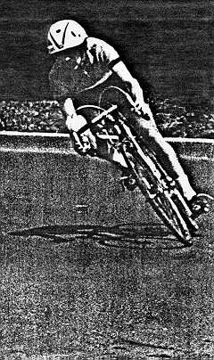
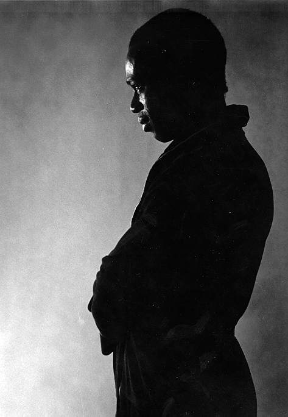
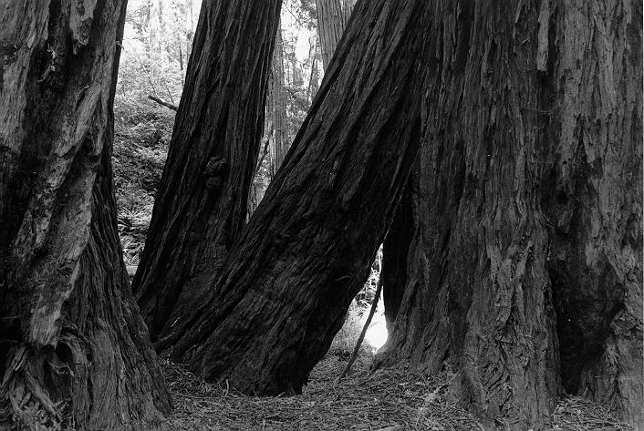
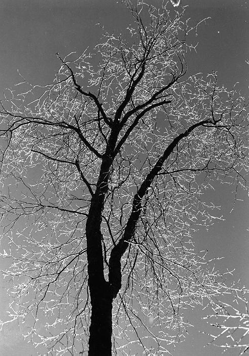

Bike race in 1978. Photocopied to increase contrast and grain effect. Photographer: Maura.

San Francisco, Financial District.

Model in my photography class, 1980.

Muir Woods (Redwood trees) c. 1980

Icy tree in Yosemite Valley, 1980. Taken on a trip with Leo, where we woke up to the most incredible freezing rain. It was all over the tent, the trees... beautiful!